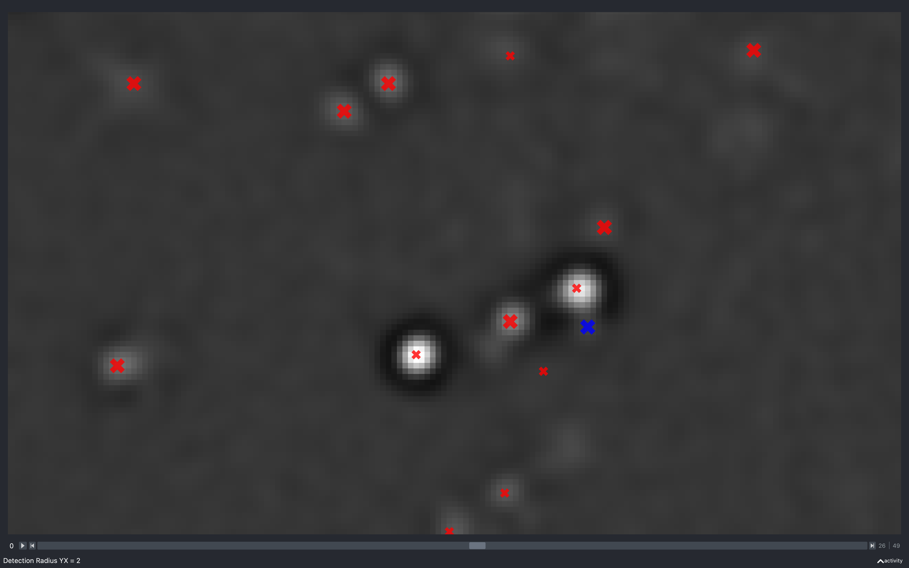

Find Spots
The find spots step of the pipeline loads in the filtered images for each tile, round, channel saved during the extract step and detects spots on them. We obtain a point cloud from the images because in the stitch and register sections of the pipeline, it is quicker to use point clouds than the full images.
The find_spots NotebookPage is added to the Notebook after this stage
is finished.
Spot detection
The spots on tile \(t\), round \(r\), channel \(c\) are
the local maxima in the filtered image (loaded in through
load_tile(nb.file_names, nb.basic_info, t, r, c))
with an intensity greater than auto_thresh[t, r, c].
Local maxima means pixel with the largest intensity in a neighbourhood defined by config['find_spots']['radius_xy']
and config['find_spots']['radius_z']:
kernel = np.ones((2*radius_xy-1, 2*radius_xy-1, 2*radius_z-1))
The position of the local maxima is found to be where the
dilation of the image with the kernel
is equal to the image.
The spot detection process can be visualised with view_find_spots.
Optimised spot detection
The dilation method is quite slow, so if jax is installed, a different spot detection method is used.
In this method, we look at all pixels with intensity greater than auto_thresh[t, r, c]. For each of these,
we say that the pixel is a spot if it has a greater intensity than all of its neighbouring pixels, where the
neighbourhood is determined by the kernel.
The larger auto_thresh[t, r, c] and the smaller the kernel, the faster this method is, whereas the value
of auto_thresh[t, r, c] makes no difference to the speed of the dilation method. In our case,
auto_thresh[t, r, c] is pretty large as the whole point is that all background pixels (the vast majority)
have intensity less than it.
For images of size \(2048 \times 2048 \times 50\), the optimised method is around 9 times faster.
Dealing with duplicates
If there are two neighbouring pixels which have the same intensity, which is the local maxima intensity, by default
both pixels will be declared to be local maxima. However, if remove_duplicates == True in
detect_spots, only one will be deemed a
local maxima.
This is achieved by adding a random shift to the intensity of each pixel. The max possible shift is 0.2 so it will not change the integer version of the image but it will ensure each pixel has a different intensity to its neighbour.
Imaging spots
For non reference spots (all round/channel combinations apart from ref_round/ref_channel),
we only use the spots for registration to the reference spots, so the quantity of
spots is not important. In fact, registration tends to work better if there are fewer but more reliable spots,
as this means there is a lesser chance of matching up spots by chance.
To exploit this, for each imaging tile, round, channel, the point cloud
is made up of the max_spots most intense spots on each z-plane. In 2D, max_spots is
config['find_spots']['max_spots_2d'] and in 3D, it is config['find_spots']['max_spots_3d'].
If there are fewer than max_spots spots detected on a particular z-plane, all the spots will be kept.
Reference spots
We want to assign a gene to each reference spot (ref_round/ref_channel), as well as use it for registration,
so it is beneficial to maximise the number of reference spots. As such, we do not do the max_spots thresholding
for reference spots.
However, we want to know which reference spots are isolated because when it comes to the
bleed_matrix calculation,
we do not want to use overlapping spots.
Isolated spots
We deem a spot to be isolated
if it has a prominent negative annulus,
because if there was an overlapping spot, you would expect positive intensity in the annulus around the spot.
We find the intensity of the annulus by computing the correlation of the image with an
annulus kernel obtained from annulus(r0, r_xy, r_z) where:
r0 = config['find_spots']['isolation_radius_inner']r_xy = config['find_spots']['isolation_radius_xy']r_z = config['find_spots']['isolation_radius_z'].
If the value of this correlation at the location of a spot is less than config['find_spots']['isolation_thresh'],
then we deem the spot to be isolated. If config['find_spots']['isolation_thresh'] is not given, it is set to:
config['find_spots']['auto_isolation_thresh_multiplier'] * auto_thresh[t, r, c]
nb.find_spots.isolation_thresh.
The process of obtaining isolated spots can be visualised with view_find_spots.
Annulus kernel
The annulus kernel should be equal to 1 over the pixels in the neighbourhood of an isolated spot
which are usually negative. The example images below show a typical spot (left) and the annulus
kernel used for this data (right) with r0 = 4, r_xy = 14 and r_z = 1.
The dimensions of each image is 29 x 29 pixels, red is positive and blue is negative.


Error - too few spots
After the find_spots NotebookPage has been added
to the Notebook, check_n_spots will be run.
This will produce a warning for any tile, round, channel for which fewer than
n_spots_warn = config['find_spots']['n_spots_warn_fraction'] * max_spots * nb.basic_info.nz
spots were detected, where max_spots is config['find_spots']['max_spots_2d'] if 2D and
config['find_spots']['max_spots_3d'] if 3D.
An error will be raised if any of the following is satisfied:
-
For any given channel, the number of spots found was less than
n_spots_warnfor at least the fractionn_spots_error_fractionof tiles/rounds.The faulty channels should then be removed from
use_channels. -
For any given tile, the number of spots found was less than
n_spots_warnfor at least the fractionn_spots_error_fractionof rounds/channels.The faulty tiles should then be removed from
use_tiles. -
For any given round, the number of spots found was less than
n_spots_warnfor at least the fractionn_spots_error_fractionof tiles/channels.The faulty rounds should then be removed from
use_rounds.
Example
The following is the \(n_{tiles}\) (3) x \(n_{rounds}\) (5) array of number of spots found for a given channel:
spot_no = array([[1295, 1016, 869, 719, 829],
[1055, 888, 687, 556, 824],
[5901, 4208, 5160, 4069, 4006]])
n_spots_warn for this experiment is 3500 so a warning will be raised for
the 10 tiles/rounds for which spot_no[t, r] < n_spots_warn:
array([[0, 0],
[0, 1],
[0, 2],
[0, 3],
[0, 4],
[1, 0],
[1, 1],
[1, 2],
[1, 3],
[1, 4]])
n_spots_error_fraction for this experiment is 0.5 so the threshold number of
failed tiles/rounds to give an error is \(0.5 \times n_{tiles} \times n_{rounds} = 7.5\).
We have 10 failed tiles/rounds so an error would be raised in this case.
The use_tiles, use_rounds and use_channels parameters can be changed without having to re-run
the find_spots section of the pipeline as explained here.
If tiles/rounds/channels are added instead of removed though, it will need re-running, as will the extract step.
n_spots_grid
The n_spots_grid function is
useful to visualise the number of spots detected on each tile, round and channel:
In the good example, you can see from the minimum on the colorbar that lots of spots have been detected on every image. You can also see that tile 13 seems to have significantly fewer spots than the other tiles and that round 0 often has fewer spots than the other rounds.
In the bad example, all tiles, rounds and channels where n_spots < n_spots_warn are highlighted by a red border.
Clearly, channels 0 and 3 did not work for this experiment and channel 1 probably didn't. Also, tile 1 appears
to have fewer spots than the other tiles.
Viewer
We can see how the various parameters affect which spots are detected using
view_find_spots.
This can be called as follows (in the Without Notebook case, the raw images will be loaded and
then filtered according to parameters in config['extract']).
from coppafish import Notebook
from coppafish.plot import view_find_spots
nb_file = '/Users/user/coppafish/experiment/notebook.npz'
nb = Notebook(nb_file)
t = 1 # tile to view
r = 3 # round to view
c = 6 # channels to view
view_find_spots(nb, t, r, c)
from coppafish.plot import view_filter
ini_file = '/Users/user/coppafish/experiment/settings.ini'
t = 1 # tile to view
r = 3 # round to view
c = 6 # channel to view
view_find_spots(None, t, r, c, config_file=ini_file)
from coppafish import Notebook
from coppafish.plot import view_find_spots
nb_file = '/Users/user/coppafish/experiment/notebook.npz'
nb = Notebook(nb_file)
t = 1 # tile to view
r = nb.basic_info.ref_round # round to view
c = nb.basic_info.ref_channel # channel to view
view_find_spots(nb, t, r, c, show_isolated=True)
This will open a napari viewer with up to 5 sliders in the bottom left:
- Detection Radius YX: This is the value of
config['find_spots']['r_xy']. - Detection Radius Z: This is the value of
config['find_spots']['r_z']. - Intensity Threshold: This is the value of
nb.extract.auto_thresh[t, r, c]. - Isolation Threshold: This is the value of
nb.find_spots.isolation_thresh[t]. It will only appear ifshow_isolated == True,r = nb.basic_info.ref_roundandc = nb.basic_info.ref_channel. - Z Thickness: Spots detected on the current z-plane and this many z-planes either side of it will be shown. Initially, this will be set to 1 so spots from the current z-plane and 1 either side of it will be shown.
Whenever the first two are changed, the dilation will be redone using the new values of the radii and the
time taken will be printed to the console. The correlation calculation required to determine which spots are
isolated is slow hence, by default show_isolated == False.
Z thickness
The images below show the effect of changing the z-thickness. The size of the spots is related to the z-plane they were detected on. The closer to the current z-plane, the larger they appear:
The blue spot has a neighbouring pixel with negative intensity and is not kept in the final point cloud.
Detection radius
YX
The images below show the effect of using the slider to change config['find_spots']['r_xy'] with
config['find_spots']['r_z'] fixed at 2 and z thickness = 2:

Clearly, as the radius increases the spots have to be separated by a larger distance, resulting in less spots found.
Z
The images below show the effect of using the slider to change config['find_spots']['r_z']
with config['find_spots']['r_yx'] fixed at 2 and z thickness = 2:

Again we see the number of spots reducing as this increases. However, it is less clear as to why, because the minimum separation in z is what is changing but, we are only seeing spots from 5 z-planes imposed on a single z-plane.
Intensity threshold
The images below show the effect of using the slider to change nb.extract.auto_thresh[t, r, c]. This is for a
2D experiment with config['find_spots']['r_yx'] = 2.
This is useful to see what a suitable intensity threshold should be. For example, the 447 plot identifies spots which do not look real while the 4757 plot misses some obvious spots.
The value of nb.extract.auto_thresh[t, r, c] obtained for this data is approximately 2234.
The green spots are those which are identified as isolated.
Changing auto_thresh
If after playing with this slider, it is decided that the find_spots part of the pipeline should be run
(or re-run) with the updated intensity threshold, new_thresh, for tile \(t\), round \(r\), channel \(c\),
this can be achieved by setting nb.extract.auto_thresh[t, r, c] = new_thresh.
Note, this is an abuse of the rules of the Notebook as it is
changing a variable after it has been added
and thus should not be allowed, but it does work. To keep the new_thresh value, the Notebook will need
saving after nb.extract.auto_thresh has been updated. It should be saved to a different location, so it does
not overwrite the initial Notebook i.e. nb.save('/Users/user/experiment1/output/notebook_new_auto_thresh.npz').
Isolation threshold
The images below show the effect of using the slider to change nb.find_spots.isolation_thresh[t].
This is for a 2D experiment with:
config['find_spots']['r_yx'] = 2,config['find_spots']['isolation_radius_inner'] = 2config['find_spots']['isolation_radius_xy'] = 2.
There is no slider to change the isolation radii because the dilation calculation is quite slow and has to be re-done everytime the radii change.

Here, we see that as the absolute threshold increases, the spots need a darker (more negative) annulus to be considered isolated (green).
The value of -438 is approximately the value of nb.find_spots.isolation_thresh[t] used for this data
(i.e. config['find_spots']['auto_isolation_thresh_multiplier'] = -0.2 and
auto_thresh[t, r, c] = 2234 gives -447 which is almost the same).
Pseudocode
This is the pseudocode outlining the basics of this step of the pipeline.
for r in use_rounds:
for t in use_tiles:
for c in use_channels:
if r is anchor_round and c is not anchor_channel:
Skip to next channel as no spots need detecting on this channel.
im = load image from npy file in tile directory
spots_trc = detect spots(im)
Remove spots with negative neighbouring pixel from spots_trc
if r is ref_round and c is ref_channel:
Determine which spots are isolated.
else:
Keep only most intense spots on each z-plane.
Set spot_no[t, r, c] to be the number of spots found.
For spot s, record in spot_details[s]:
- tile: tile found on
- round: round found on
- channel: channel found on
- isolated: whether spot isolated (if not ref_round/ref_channel,
this will be False)
- y: y coordinate of spot in tile
- x: x coordinate of spot in tile
- z: z coordinate of spot in tile
Add isolation_threshold, spot_no and spot_details to find_spots NotebookPage
Return find_spots NotebookPage